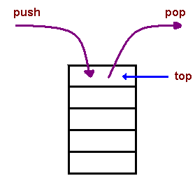

Stack
Introduction
A stack is a container of objects that are inserted and removed according to the last-in first-out (LIFO) principle. In the pushdown stacks only two operations are allowed: push the item into the stack, and pop the item out of the stack. A stack is a limited access data structure - elements can be added and removed from the stack only at the top. push adds an item to the top of the stack, pop removes the item from the top. A helpful analogy is to think of a stack of books; you can remove only the top book, also you can add a new book on the top. 
A stack is a recursive data structure. Here is a structural definition of a Stack:
a stack is either empty or
it consistes of a top and the rest which is a stack;
We only use only one pointer called top.
Functions
- Push - It pushes element On top of Stack
- Pop - It removes the top most element of stack
- Peek - It shows top most element of stack
Algorithm For Function
Adding into stack
procedure add(item : items);
{add item to the global stack stack;
top is the current top of stack
and n is its maximum size}
begin
if top = n then stackfull;
top := top+1;
stack(top) := item;
end: {of add}
Deletion in stack
procedure delete(var item : items);
{remove top element from the stack stack and put it in the item}
begin
if top = 0 then stackempty;
item := stack(top);
top := top-1;
end; {of delete}
Peeking into stack
procedure peek();
{add item to the global stack stack;
top is the current top of stack
and n is its maximum size}
begin
temp=stack(top); end: {of peek}
These two procedures are so simple that they perhaps need no more explanation. Procedure delete actually combines the functions TOP and DELETE, stackfull and stackempty are procedures which are left unspecified since they will depend upon the particular application. Often a stackfull condition will signal that more storage needs to be allocated and the program re-run. Stackempty is often a meaningful condition.
Applications
- The simplest application of a stack is to reverse a word. You push a given word to stack - letter by letter - and then pop letters from the stack.
- Another application is an "undo" mechanism in text editors; this operation is accomplished by keeping all text changes in a stack.
- Backtracking.
This is a process when you need to access the most recent data element in a series of elements. Think of a labyrinth or maze - how do you find a way from an entrance to an exit? Once you reach a dead end, you must backtrack. But backtrack to where? to the previous choice point. Therefore, at each choice point you store on a stack all possible choices. Then backtracking simply means popping a next choice from the stack. - Language processing:
space for parameters and local variables is created internally using a stack.
compiler's syntax check for matching braces is implemented by using stack.
support for recursion - Depth-First Search with a Stack
In depth-first search we go down a path until we get to a dead end; then we backtrack or back up (by popping a stack) to get an alternative path.
Algorithm:
Create a stack
Create a new choice point
Push the choice point onto the stack
while (not found and stack is not empty)
Pop the stack
Find all possible choices after the last one tried
Push these choices onto the stack
Return